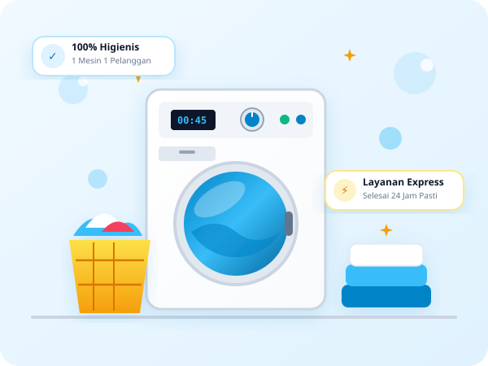
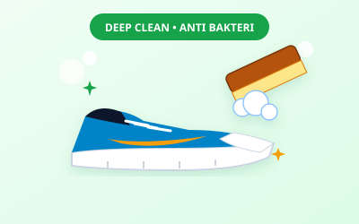
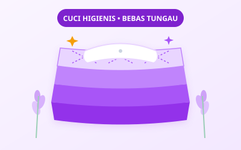

Air Filter 3 Tahap
Proses pencucian menggunakan air bersih terfiltrasi bebas zat besi dan kaporit, sehingga warna pakaian putih tidak menguning dan tetap cerah.
KlinWash Laundry Express hadir dengan standar 1 mesin untuk 1 pelanggan, deterjen ramah serat kain, serta setrika uap untuk hasil rapi dan wangi tahan lama.

Kami menjaga setiap helai serat pakaian pelanggan dengan proses pencucian terstandarisasi dan higienis.
Proses pencucian menggunakan air bersih terfiltrasi bebas zat besi dan kaporit, sehingga warna pakaian putih tidak menguning dan tetap cerah.
Formula deterjen ramah lingkungan dengan keharuman tahan lama, aman untuk kulit sensitif dan tidak meninggalkan residu sabun.
Sistem pencatatan teratur memastikan setiap pesanan selesai sesuai jadwal yang dijanjikan demi kenyamanan pelanggan.
Tiga paket cuci yang paling banyak dipilih oleh pelanggan.
 Paling Laris
Paling Laris
Solusi praktis pakaian sehari-hari selesai dalam 1 hari. Termasuk cuci, kering sempurna, setrika uap rapi, dan kemasan higienis.
Tanya Layanan
Perawatan KhususPencucian menyeluruh luar dan dalam menggunakan cairan pembersih khusus material kanvas, suede, maupun kulit agar kembali bersih.
Tanya Layanan
Perawatan KamarPembersihan mendalam untuk bed cover ukuran single hingga king size dengan proses pencucian higienis dan wangi segar.
Tanya Layanan